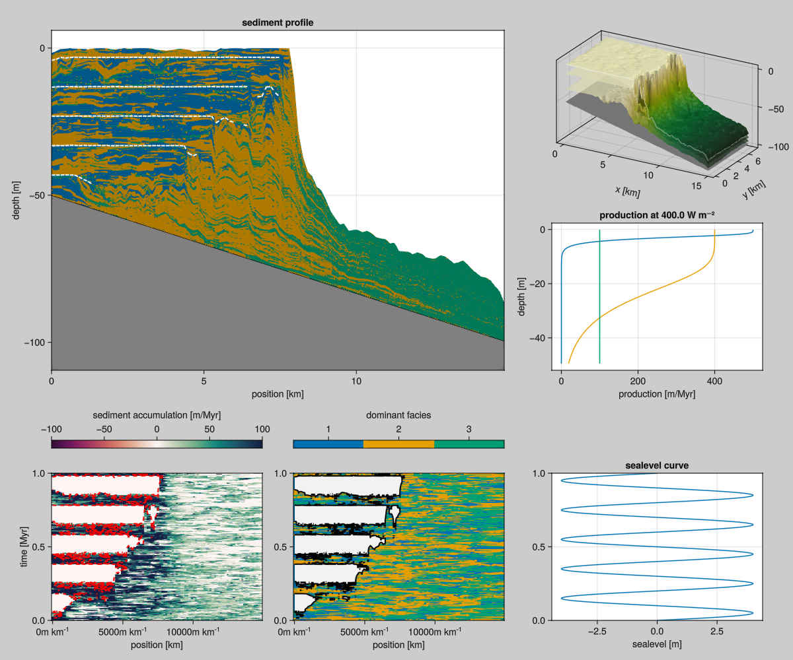

CA with production
This model combines BS92 production with the B13 cellular automaton. This production model is implemented in the CAProduction component.

Complete example
This example is running for 10000 steps to 1Myr on a 100 $\times$ 50 grid, starting with a sloped height down to 50m. The sea_level, and initial_depth arguments are functions. The phys_scale argument translate pixels on the grid into physical metres. The write_interval indicates to write output every 10 iterations, summing the production over that range.
file:examples/model/cap/run.jl
#| creates: data/output/cap1.h5
#| requires: src/Models/CAP.jl
module Script
using CarboKitten
const PERIOD = 200.0u"kyr"
const AMPLITUDE = 4.0u"m"
const FACIES = [
CAP.Facies(
viability_range = (4, 10),
activation_range = (6, 10),
maximum_growth_rate = 500u"m/Myr",
extinction_coefficient = 0.8u"m^-1",
saturation_intensity = 60u"W/m^2"),
CAP.Facies(
viability_range = (4, 10),
activation_range = (6, 10),
maximum_growth_rate = 400u"m/Myr",
extinction_coefficient = 0.1u"m^-1",
saturation_intensity = 60u"W/m^2"),
CAP.Facies(
viability_range = (4, 10),
activation_range = (6, 10),
maximum_growth_rate = 100u"m/Myr",
extinction_coefficient = 0.005u"m^-1",
saturation_intensity = 60u"W/m^2")
]
const INPUT = CAP.Input(
tag = "cap1",
box = Box{Coast}(grid_size=(100, 50), phys_scale=150.0u"m"),
time = TimeProperties(
Δt = 200.0u"yr",
steps = 5000),
output = Dict(
:topography => OutputSpec(write_interval = 500),
:profile => OutputSpec(slice = (:, 25))),
sea_level = t -> 4.0u"m" * sin(2π * t / 0.2u"Myr"),
initial_topography = (x, y) -> - x / 300.0,
subsidence_rate = 50.0u"m/Myr",
insolation = 400.0u"W/m^2",
facies = FACIES)
main() = run_model(Model{CAP}, INPUT, "data/output/cap1.h5")
end
Script.main()This writes output to an HDF5 file that you may use for further analysis and visualization.
file:examples/model/cap/plot.jl
#| creates: docs/src/_fig/cap1-summary.png
#| requires: data/output/cap1.h5
#| collect: figures
using GLMakie
using CarboKitten.Visualization
GLMakie.activate!()
save("docs/src/_fig/cap1-summary.png", summary_plot("data/output/cap1.h5"))Implementation
file:src/Models/CAP.jl
@compose module CAP
@mixin Tag, Diagnostics, Output, CAProduction, InitialSediment
using ..Common
using ..CAProduction: production
using ..TimeIntegration
using ..WaterDepth
using ...Output: Frame
using ModuleMixins: @for_each
export Input, Facies
function initial_state(input::Input)
ca_state = CellularAutomaton.initial_state(input)
for _ in 1:20
CellularAutomaton.step!(input)(ca_state)
end
sediment_height = zeros(Height, input.box.grid_size...)
state = State(
step=0, sediment_height=sediment_height,
ca=ca_state.ca, ca_priority=ca_state.ca_priority)
InitialSediment.push_initial_sediment!(input, state)
return state
end
function initial_frame(input::Input)
dep = stack(InitialSediment.initial_sediment(input.box, f) for f in input.facies; dims=1)
return Frame(production=zeros(Sediment,size(dep)),
disintegration=zeros(Sediment,size(dep)),
deposition=dep)
end
function step!(input::Input)
τ = production(input)
step_ca = CellularAutomaton.step!(input)
function (state::State)
if mod(state.step, input.ca_interval) == 0
step_ca(state)
end
prod = τ(state)
Δη = sum(prod; dims=1)[1, :, :]
state.sediment_height .+= Δη
state.step += 1
return Frame(
production=prod,
deposition=prod)
end
end
function write_header(input::AbstractInput, output::AbstractOutput)
@for_each(P -> P.write_header(input, output), PARENTS)
end
end